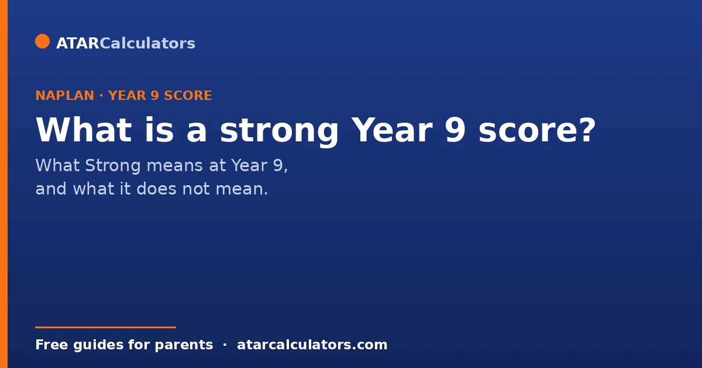
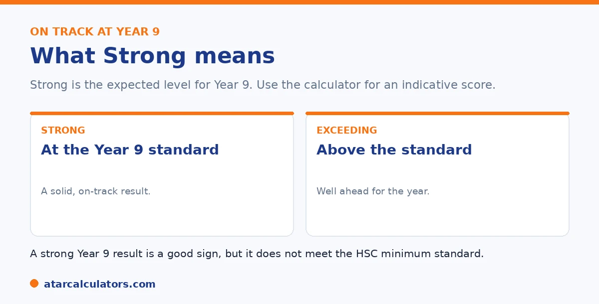

Here is the short version. Since 2023, Year 9 NAPLAN reports four levels, and Strong is the expected level. A Strong result means your child is at or just above the Year 9 standard, which is a good, on-track result. Exceeding is above it. Because the bar rises with each year, a Strong Year 9 score sits much higher than a Strong score in earlier years. A strong result is a good sign, but it does not meet the NSW HSC minimum standard.
When the Year 9 report arrives, the first question is usually whether the result is good. The clear answer is to look at the level, and aim for Strong.
Below is what Strong means at Year 9 and how to read the result. To see an indicative level for a Year 9 score, use our Year 9 NAPLAN calculator.
Key takeaways
- Since 2023, Year 9 reports four levels. Strong is the expected level.
- Strong means at or just above the Year 9 standard. It is a good result.
- Exceeding is above Strong. Both are on-track results.
- A Strong Year 9 score sits much higher than Strong in earlier years.
- Use the level, and the scaled score, together.
- A strong result does not meet the NSW HSC minimum standard.
What Strong means at Year 9
Before 2023, Year 9 results used bands. That is gone. Year 9 NAPLAN now reports four levels, and Strong is the expected level for the year.

A Strong result means your child is at or just above the Year 9 standard. That is a solid, on-track result. Exceeding means well above the standard. Developing means below it, with the basics in place, and Needs additional support means extra help would help.
What score counts as Strong?
A level is a band of scores, not a single mark. The exact scaled score for Strong is set each year and printed on your child's report. So the report is the place to read the precise figure.
For a quick indicative guide, our Year 9 NAPLAN calculator estimates the level from a reading or numeracy score. Treat it as a guide, then confirm the exact result from the report.
Want an indicative level for a Year 9 score?
Open the Year 9 NAPLAN calculator →Why Strong is higher at Year 9
NAPLAN uses one common scale across all years. Because older students are expected to know more, the score needed to reach Strong rises each year. So a Strong result at Year 9 sits much higher on the scale than a Strong result at Year 5.
This is why you cannot judge a Year 9 score by an earlier year's number. Always read the score against the Year 9 standard, which the level tells you. For how this works across years, see our guide on NAPLAN by year level.
Is Strong enough for the HSC minimum standard?
This is a common question in NSW, and the answer surprises some parents. A Strong Year 9 NAPLAN result does not meet the HSC minimum standard. Year 9 NAPLAN does not count toward it at all.
Every NSW student meets the HSC minimum standard by sitting separate online tests in reading, writing and numeracy, from Year 10 onwards. So a Strong Year 9 result is a good early sign your child has the skills, but it does not tick the HSC box. See our Year 9 NAPLAN guide for the full picture.
What if my child is below Strong?
If your child is at Developing, that is not a failure. It means they are below the Year 9 standard, but the basics are there. It points to an area to work on, with steady support.
Look at which area is lower, talk to the teacher about next steps, and keep practice light and regular. For what counts as a good result more broadly, see our guide on a good NAPLAN score by year level.
If your child sits below Strong, the most useful response is calm and specific rather than anxious. A Developing result means your child is working towards the Year 9 standard, not that they lack the foundations. The building blocks are there. And the result is best read as a pointer to where some focused support would help. Start by looking at which domain is lower. This is because reading, writing, numeracy and language conventions are separate. And a child can be solid in one and need help in another. That tells you where to direct effort rather than treating "below Strong" as a blanket problem. The classroom teacher is the natural next step. This is because they already know your child's strengths and can suggest concrete, targeted next steps and whether any extra support is warranted. At home, keep practice light and regular rather than intense. A little reading together, everyday numeracy in conversation, and encouragement to write build genuine skill without pressure. And a supported child progresses better than a stressed one. It also helps to keep the timeframe in perspective. Year 9 is well before the senior years that shape the ATAR. So there is ample time for a child who is Developing now to strengthen the underlying skills. Treat the result as early, actionable information, address the specific area with steady support and the teacher's guidance, and avoid framing it as a verdict. This is because it is simply a checkpoint with plenty of room to improve.
What to do next, whatever the level
If your child reaches Strong or Exceeding, the goal is simply to keep building good habits into the senior years. A strong Year 9 base makes Years 11 and 12 easier.
If they are below Strong, focus on the weakest single area first. Targeted help in one domain, given early, tends to lift results more than trying to fix everything at once.
Strong is a foundation, not a finish line
Reaching Strong at Year 9 is a good sign, but it is a foundation rather than a finish line. The senior years ask for more than the core skills NAPLAN checks.
So keep building reading, writing and numeracy habits into Years 10 and 11. A Year 9 result, strong or not, is most useful as a starting point for the work ahead, not a final measure of where your child will end up.
Common questions
What is a strong Year 9 NAPLAN result?
Strong is the expected level for Year 9, meaning your child is at or just above the Year 9 standard. It is a good, on-track result. Exceeding is above it.
What proficiency level should a Year 9 student reach?
Strong is the level to aim for, as it is the expected standard for Year 9. Exceeding is above it. Both show your child is on track or ahead.
What is the expected standard at Year 9?
The expected standard is Strong. Because the bar rises each year, the score needed to reach Strong at Year 9 is much higher than in earlier years.
Is Strong enough for the HSC minimum standard?
No, because Year 9 NAPLAN does not count toward the HSC minimum standard at all. That standard is met separately, by sitting online tests in reading, writing and numeracy in Years 10 to 12.
What is a good Year 9 NAPLAN score?
A good result is Strong or Exceeding for Year 9. There is no single good number, since the scale differs by year level. Use the Year 9 NAPLAN calculator for an indicative level.
What if my child is below Strong?
A result of Developing is not a failure. It means below the Year 9 standard, with the basics in place. Focus on the lower area with steady support, and talk to the teacher about next steps.
Check an indicative Year 9 level
Enter Year 9 reading and numeracy scores to see the indicative level. Free, and no signup.
Open the Year 9 NAPLAN calculator →Related guides
This guide is general information for parents, not formal advice. HSC and NAPLAN rules can change. So always confirm the current HSC minimum standard with NESA, and check NAPLAN details at the National Assessment Program site. Reviewed by the ATARCalculators Editorial Team.